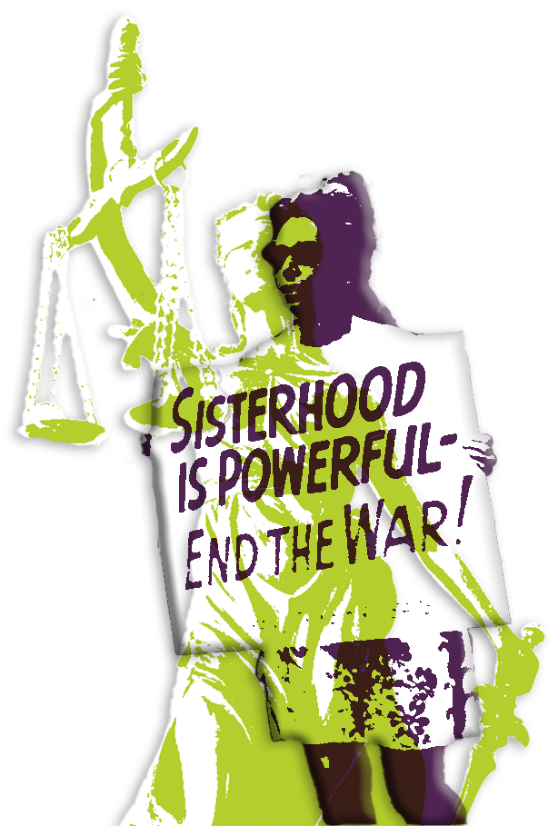
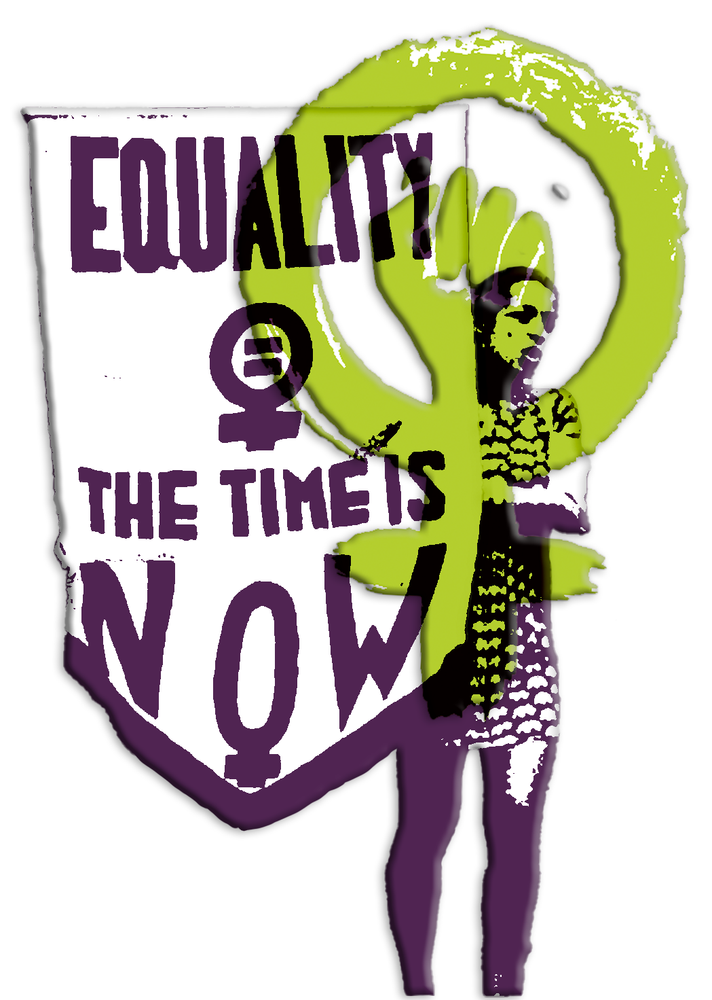
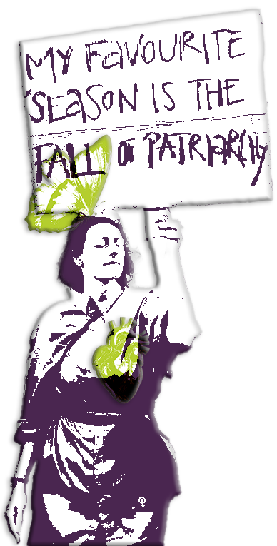
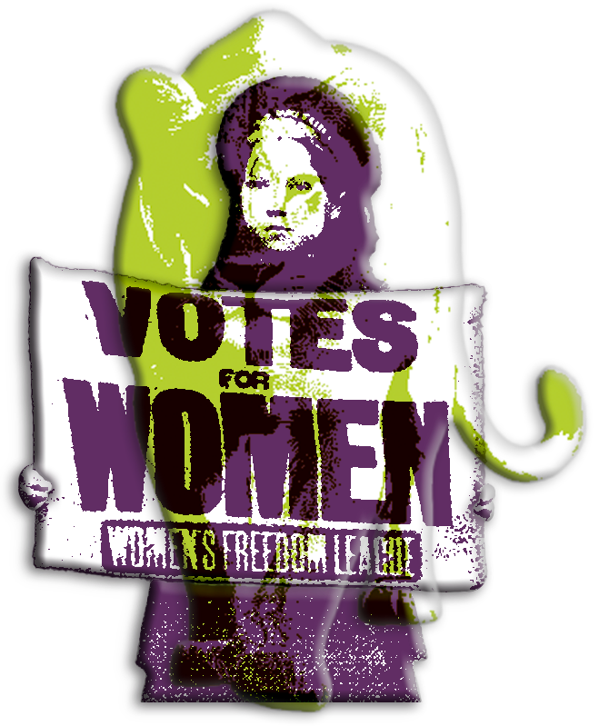
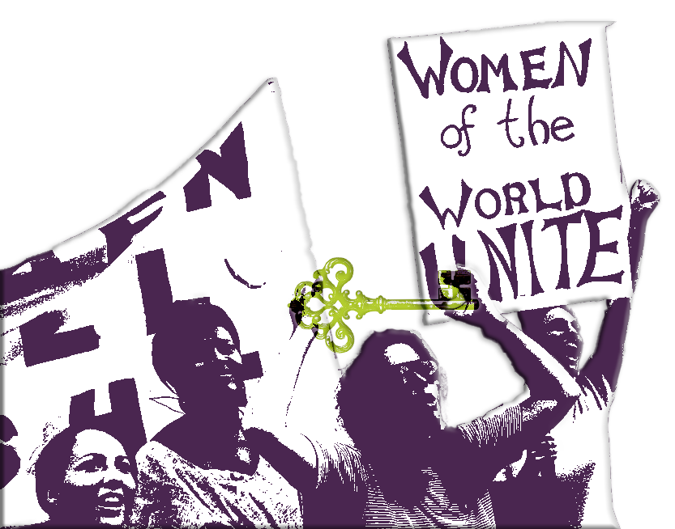
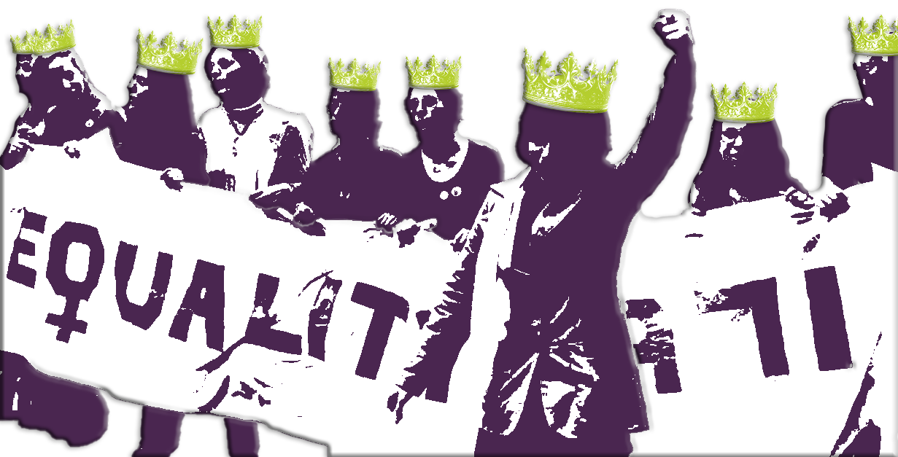

-
Deep Dive
- This page contains further reading material on feminism, dive into podcasts, books and even music.
-

A protesting women holding a sign that says sisterhood is powerful - end the war! Articles
Amnesty International We are all entitled to human rights. These include the right to live free from violence and discrimination; to enjoy the highest attainable standard of physical and mental health; to be educated; to own property; to vote; and to earn an equal wage.
Why does feminism matter? Feminist movements have increased justice, freedom and happiness for over 100 years. Feminism seeks a just distribution of resources and opportunities, freedom to express one’s views and control one’s life, and protection and stewardship of our common, natural environment. But this can’t happen when oppression and discrimination affect more than half of the world’s population.
A Kinda Brief History of Feminism We often refer to feminism as a singularly united ideology in our everyday vocabulary, but the reality and history of the movement are much more complicated. While everyone who calls themselves a feminist shares the common desire to end gender-based discrimination, they may have very different ideas about what that discrimination looks like, its origins, and how to solve it best.
International Women's Day International Women's Day (IWD) is celebrated on 8 March, commemorating women's fight for equality and liberation along with the women's rights movement.
-
Podcasts
Listen to The Guilty: Feminist The Guilty Feminist, an award-winning podcast and live show hosted by Deborah Frances-White. We’re a supportive forum to discuss our noble goals as 21st century feminists and the hypocrisies and insecurities that undermine them.
Feminist Frequency Radio Feminist Frequency Radio is coming for your media. Each week, Kat Spada invites you to listen in on entertaining and stimulating conversations about films, games, and TV... from the latest blockbusters to classic hidden gems, and more.
Breaking Down Patriarchy Breaking Down Patriarchy is a registered 501(c)3 Nonprofit Organization dedicated to education, empowerment, and building a more equitable world for people of all genders.

A protesting woman holding a sign that says "Equality, the time is NOW". In a different colour and light opacity the feminist logo is plastered over the women. -

A protesting women holding a sign that says “My favorite season is the FALL of the patriarchy”. She had her eyes closed. In another colour she had a butterfly landing on het head, slightly covering the word fall. Another element is the different coloured atomically heart on her chest. Books
The Second Sex When this book was first published in 1949 it was to outrage and scandal. Never before had the case for female liberty been so forcefully and successfully argued. De Beauvoir’s belief that ‘One is not born, but rather becomes, a woman’ switched on light bulbs in the heads of a generation of women and began a fight for greater equality and economic independence. These pages contain the key passages of the book that changed perceptions of women forever.
The Feminine Mystique Published in 1963, it gave a pitch-perfect description of “the problem that has no name”: the insidious beliefs and institutions that undermined women’s confidence in their intellectual capabilities and kept them in the home. Writing in a time when the average woman first married in her teens and 60 percent of women students dropped out of college to marry, Betty Friedan captured the frustrations and thwarted ambitions of a generation and showed women how they could reclaim their lives.
Invisible Women Data is fundamental to the modern world. From economic development, to healthcare, to education and public policy, we rely on numbers to allocate resources and make crucial decisions. But because so much data fails to take into account gender, because it treats men as the default and women as atypical, bias and discrimination are baked into our systems. And women pay tremendous costs for this bias, in time, money, and often with their lives. Celebrated feminist advocate Caroline Criado Perez investigates the shocking root cause of gender inequality and research in Invisible Women, diving into women’s lives at home, the workplace, the public square, the doctor’s office, and more. Built on hundreds of studies in the US, the UK, and around the world, and written with energy, wit, and sparkling intelligence, this is a groundbreaking, unforgettable exposé that will change the way you look at the world.
-
Documentaries
Miss Representation Miss Representation is a 2011 American documentary film written, directed, and produced by Jennifer Siebel Newsom.[1][2] The film explores how mainstream media contributes to the under-representation of women in influential positions by circulating limited and often disparaging portrayals of women.
He Named Me Malala He Named Me Malala is a 2015 American documentary film directed by Davis Guggenheim. The film presents the young Pakistani female activist and Nobel Peace Prize laureate Malala Yousafzai, who has spoken out for the rights of girls, especially the right to education, since her early childhood.

A protesting girl holding a sign that says “Votes for Women”. In another colour and opacity, a Lionesstand behind her, giving the illusion the lion is a part of her. -

A group of women are protesting. One women holds up a key in a different colour. Another woman is holding a sign that says” Women of the world Unite” Music
"9 to 5" by Dolly Parton Created for the playful-but-anti-patriarchal comedy film 9 to 5, the song was picked up as an anthem for women working in the office.
Only The Young by Taylor Swift Swift crafts this anthem as a direct response to the helplessness felt by young voters in a broken system. The pop production utilizes a steady, pulsing beat that acts as a metronome for anxiety, keeping the pressure high so the listener cannot settle into a comfort zone. She skips the polite metaphors, opting instead for the sharp image of a rigged game and red hands. It feels less like a polished radio hit and more like a warning issued during a power outage.
-
Anti-Feminism
While I have made my stance very clear, I want to offer more than just my own perspective on the matter. Here are some other perspectives that could give more nuance of the situation in it's whole.
Femininity, not Feminism Written by: Sophie Fujiwara

A group of protesting women, are holding a sign together that says equality. The women on the foreground raises her fist in solidarity. In another colour all of the women are wearing crowns.